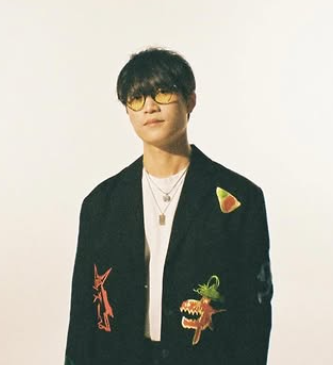
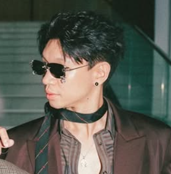
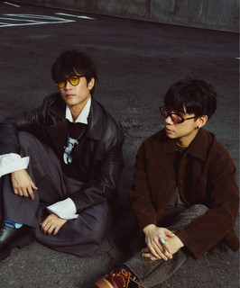
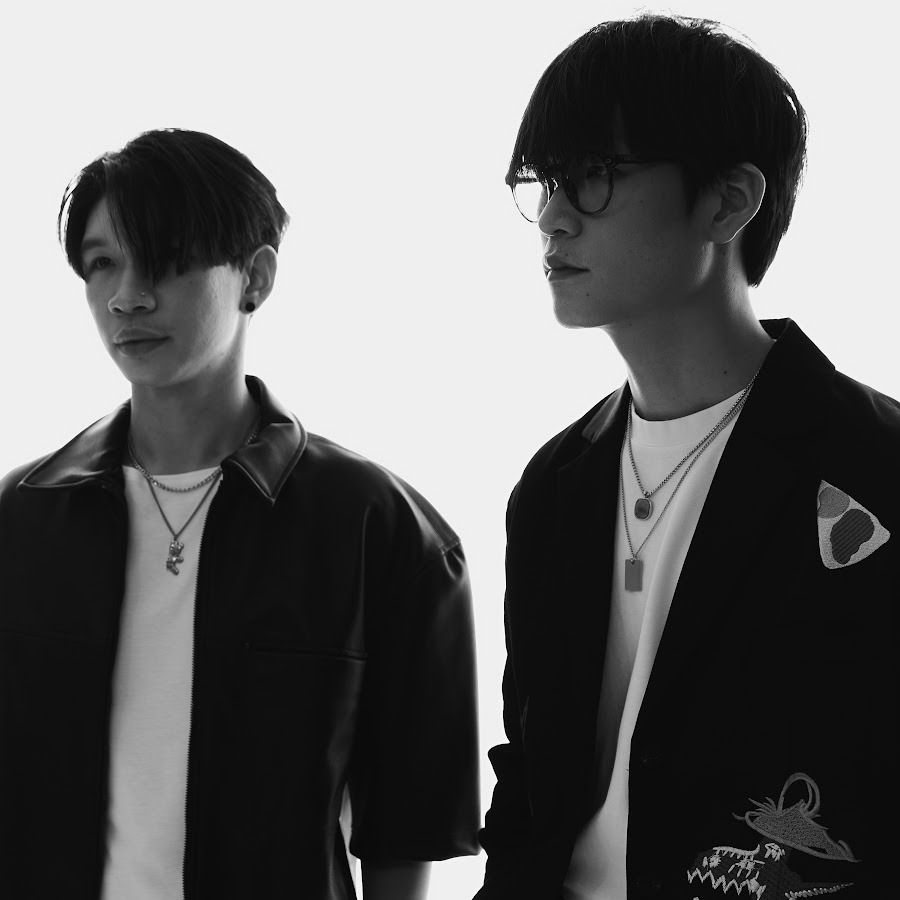

Artist
Artist
Dreamy soundscapes woven from reverb-soaked guitars and melancholic vocals.
Dreamy soundscapes woven from reverb-soaked guitars and melancholic vocals.

Lead Vocals - guitarist

Drummer
Bassist (former member)
Safeplanet crafts a signature sound that sits at the intersection of dreamy indie pop and ethereal shoegaze. Their music is defined by lush, reverb-soaked guitar layers that weave together with soft-spoken vocals and hazy, cinematic production. Drawing inspiration from artists like Beach House, Cigarettes After Sex, and Slowdive, Safeplanet creates an immersive soundscape that feels both nostalgic and otherworldly. Each track is a journey through introspective emotion, designed to transport listeners to a tranquil, starlit universe far from the noise of everyday life.


Formed in Bangkok in 2018, Safeplanet is a four-piece indie pop band that has quietly become one of Thailand's most beloved underground acts. The band — comprising vocalist Mint, guitarist Fluke, bassist Ploy, and drummer Bank — began their journey writing songs in a small rehearsal studio in Ladprao, channeling their shared love of British dream pop into something entirely their own. Their debut EP Drifting (2020) gained a devoted following online, praised for its delicate production and emotionally honest lyricism. Since then, Safeplanet has grown steadily, performing at major festivals including CAT Expo and Big Mountain, and releasing their full-length album Somewhere Soft in 2023 to widespread critical acclaim.